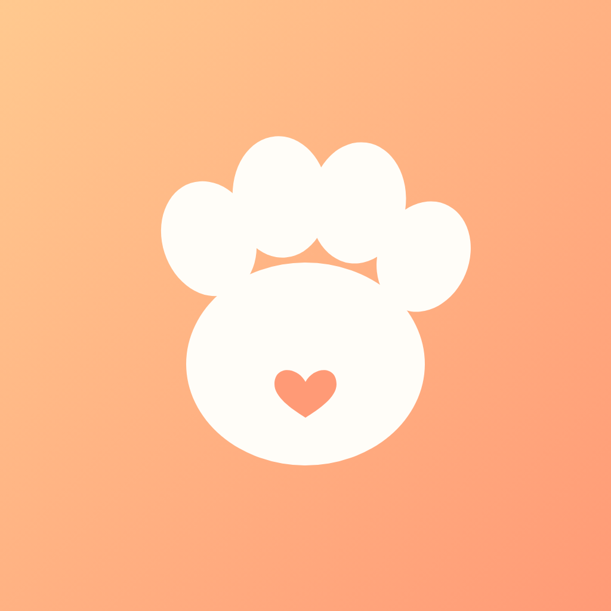
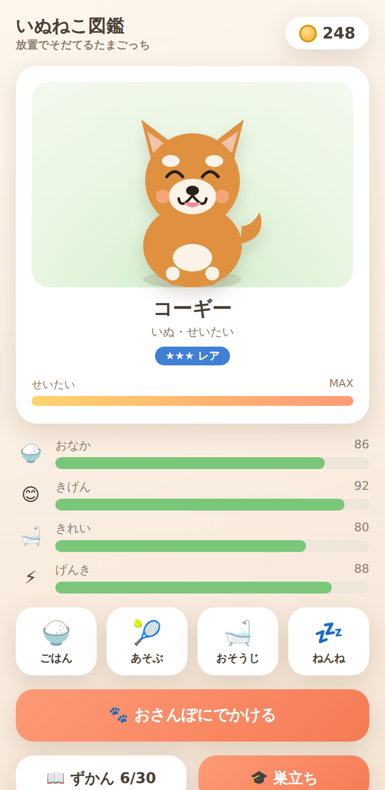
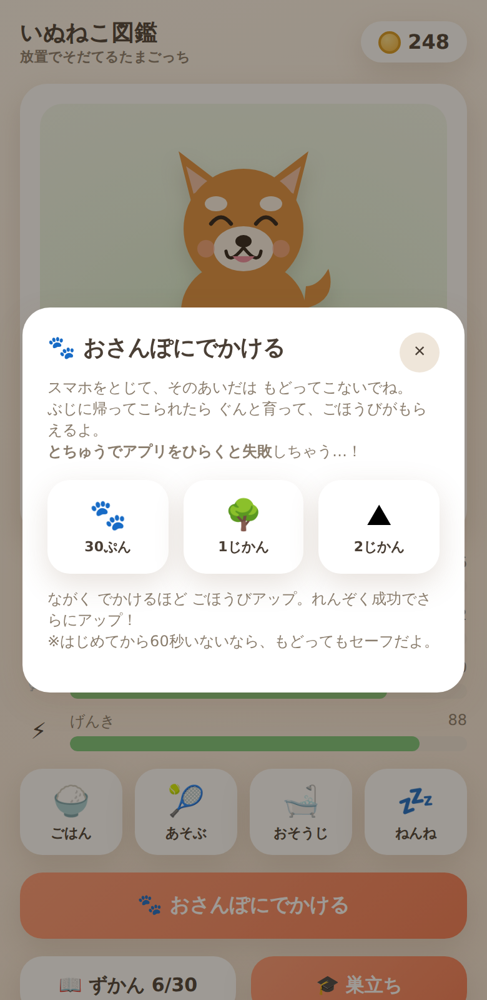
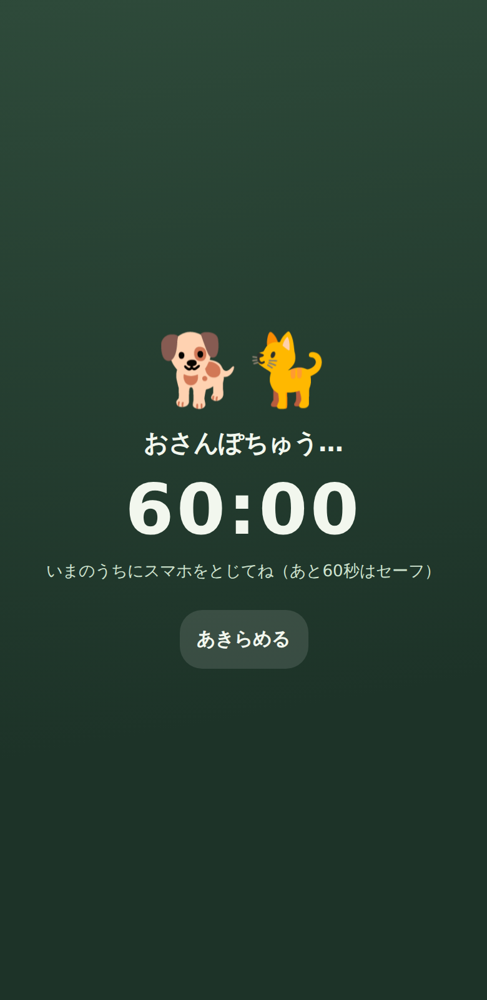
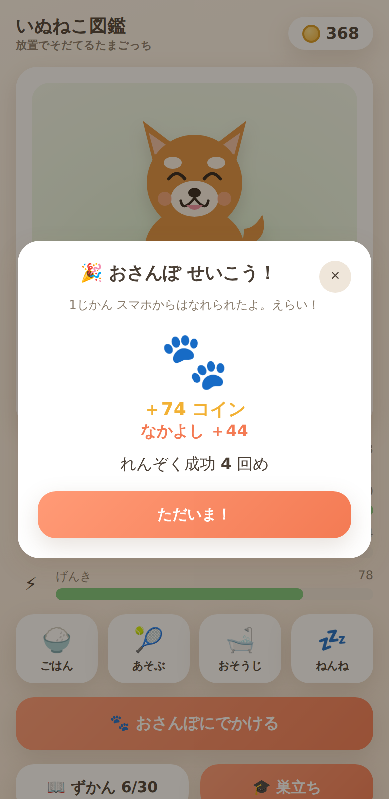
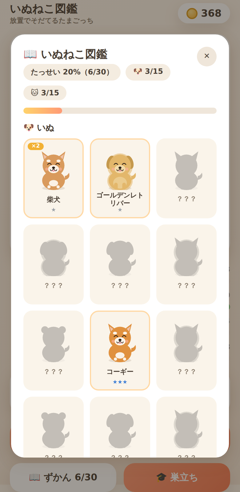

スマホ依存を自覚
（MMD研究所調査）
若者が「SNS時間を
減らしたい」
（SHIBUYA109 lab.）
Z世代トレンド2026に選出。
条例・専門外来も登場
「やめたい」気持ちはあるのに、我慢だけでは続かない。
続けたくなる「ごほうび」が必要。
スマホを触らない時間が、目に見える成長になる
柴犬からベンガルまで、30種の品種図鑑を埋めていく
たまご→あかちゃん→こども→せいたい。育てて、巣立たせて、図鑑に殿堂入り
失敗しても死なない・責めない、「がんばらないデトックス」。


① 時間をえらぶ
30分・1時間・2時間

② スマホをふせる
とちゅうで開くと失敗…！

③ ごほうび＆成長
れんぞく成功でボーナスUP

| アプリ | 実績 | 弱点 | いぬねこ図鑑は |
|---|---|---|---|
| Forest（木） | 200万人・136カ国1位 | 木に愛着が湧きにくい／iOS有料 | 犬猫の情緒＋無料 |
| スマやめ（魚） | 日本でレビュー1.5万件 | 広告過多・コンプに課金必須 | 広告ゼロ・無課金コンプ |
| Focus Friend（豆） | 米App Store総合1位(2025) | キャラ1体・図鑑なし | 30種を集める継続動機 |
| Pokémon Sleep | 収益の70%が日本 | —（参照例） | 「行動×図鑑」は日本で最強 |
「犬・猫の品種図鑑」を核にした日本語デトックスアプリはまだ存在しない（2026年6月 調査時点）。
| 6/10 | 主要機能ぜんぶ実装済み（おさんぽ・図鑑30種・アイコン・ストア文書）✅ |
| 6/12〜15 | 実機テスト → リリース候補ビルド |
| 6/22 | プログラム完成（v1.0.0） |
| 7月〜 | App Store / Google Play 公開（審査・テスト期間を経て） |
スマホとちょっと距離を置きたいあなたへ。かわいい相棒と、すこしずつ。